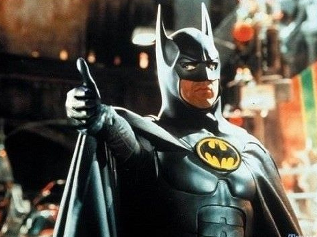

<div class="d-flex text-center shadow-lg p-3 mb-5 bg-body text-light">
  <div class="col-4 align-self-center">
    
  </div>

  <div class="col-4">
    <p class="fs-3" >Cadastro de CEP da cidade de Gotham City</p>
    <p class="fs-4">Aprovado pelo BatKeaton 🦇</p>
  </div>
</div>

<div class="menu text-light">

  <nav class="navbar navbar-expand-lg bg-dark">
<!--     <button
      class="navbar-toggler"
      type="button"
      data-toggle="collapse"
      data-target="#navbarsExample"
      aria-controls="navbarsExample"
      aria-expanded="false"
      aria-label="Toggle navigation"
    >
      <span class="navbar-toggler-icon"></span>
    </button> -->

    <div class="collapse navbar-collapse justify-content-center" id="navbarsExample">
      <ul class="navbar-nav mr-auto">
        <li class="nav-item">
          <a
            class="nav-link text-light"
            *ngIf="loginbtn"
            routerLink="login"
            routerLinkActive="active"
            >Login</a
          >
        </li>
        <li class="nav-item text-light">
          <button
            type="button"
            *ngIf="logoutbtn"
            class="btn btn-block text-light"
            (click)="logout()"
          >
            Sair
          </button>
        </li>
        <li class="nav-item">
          <a
            class="nav-link text-light"
            *ngIf="loginbtn"
            routerLink="registration"
            routerLinkActive="active"
            >Cadastre-se</a
          >
        </li>
      </ul>
    </div>
  </nav>
</div>
<router-outlet></router-outlet>
